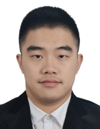

Berufsprofil

Automotive Software Ingenieur mit 3+ Jahren Erfahrung in der Absicherung sicherheitskritischer Fahrzeugfunktionen (RDC/TPMS, IBS) an HiL-Prüfständen mit dSPACE und CANoe. M.Sc. Automatisierungstechnik (TU Kaiserslautern), Schwerpunkt Regelungstechnik, Robotik und Maschinelles Lernen. Eigenständig entwickelte Python/PyQt6-Desktopanwendung zur Echtzeit-Überwachung der ECU-Gesundheit via CAN-Bus – reduziert den manuellen Diagnoseaufwand im Validierungsprozess.
Berufserfahrung
06.2022 – heute — Application Software Ingenieur, Way Engineering GmbH
- Verifiziert und sichert RDC- (TPMS) und IBS-Funktionen an HiL-Prüfständen mit dSPACE und CANoe gemäß Anforderungsspezifikation ab
- Spezifiziert, implementiert und pflegt Testfälle in Python, führt systematische Regressionstests nach ECU-Software-Updates durch
- Analysiert Testergebnisse, identifiziert Fehlerursachen und koordiniert Rückmeldungen mit dem Entwicklungsteam
- Entwickelt eigenständig eine Python/PyQt6-Desktop-Anwendung zur Echtzeit-Überwachung der ECU-Gesundheit via CAN-Bus (Vector XL / PCAN); unterstützt die Wiedergabe von MF4/BLF-Logdateien aus CANoe/CANape
IT-Kenntnisse
| dSPACE | Sehr gut |
CANoe / CANape | Sehr gut |
| Python | Gut |
C++ | Gut |
| Matlab / Simulink | Gut |
ROS2 | Gut |
| Linux | Gut |
Git | Gut |
Studium
09.2017 – 10.2021 — TU Kaiserslautern, Kaiserslautern
- Studiengang: Automatisierungstechnik (M.Sc.)
- Abschlussnote: 2,3
- Schwerpunkte: Regelungstechnik, Automation, Robotik, Maschinelles Lernen
09.2012 – 06.2016 — Tongji-Universität, Shanghai
- Studiengang: Automatisierungstechnik (B.Eng.)
- Abschlussnote: 81,53 / 100
09.2012 – 06.2014 — Tongji-Universität, Shanghai
Akademische Projekte
03.2021 – 10.2021 — Masterarbeit: "A Nonlinear MPC for Trajectory Following of Highly Automated Vehicles"
Lehrstuhl für Mechatronik, TU Kaiserslautern
- Entwickelt ein nichtlineares Model-Predictive-Control (MPC)-Konzept für die Trajektorienfolge hochautomatisierter Fahrzeuge
- Implementiert ein Einspurmodell mit gekoppelter Quer- und Längsregelung in MATLAB/Simulink
- Validiert den Regelungsansatz in Simulationsumgebungen unter verschiedenen Fahrdynamikszenarien
07.2020 – 11.2020 — Masterprojekt: "Artifacts Analysis Based on Machine Learning in X-ray Images of Food Samples"
Lehrstuhl für Kognitive Integrierte Sensorsysteme, TU Kaiserslautern
- Implementiert und vergleicht AlexNet und YOLO v5 in PyTorch zur automatischen Artefakt-Erkennung in Röntgenbildern
- Evaluiert Gabor-Filter als Feature-Extraktoren im Vorverarbeitungsschritt
- Erzielt signifikante Verbesserung der Erkennungsrate durch Kombination klassischer und Deep-Learning-Methoden
Praktika
06.2021 – 02.2022 — Wissenschaftliche Hilfskraft (HiWi), Projekt "Reliability and Timeliness in Communication Control Codesign (RTC³)"
Lehrstuhl für Funkkommunikation und Navigation, TU Kaiserslautern
- Modelliert und analysiert das Inverse-Pendel-System als Benchmarkproblem für drahtlose Regelungsarchitekturen in MATLAB/Simulink
- Untersucht den Einfluss stochastischer Störungen und Kommunikationsverluste auf die Regelstabilität
- Bewertet Stabilitätsgrenzen unter variierenden Netzwerkbedingungen
Auszeichnungen & Preise
12.2024 — Bester Kunde des Jahres, ARRK Engineering
01.2015 — Honorable Mention, "Synthesized Indicator Evaluating System Model of the Sustainable Development"
— Interdisciplinary Contest in Modeling (MCM/ICM)
Fremdsprachen
| Chinesisch | Muttersprache |
| Englisch | Gut (C1) |
| Deutsch | Gut (B2) |
Professional Profile
Automotive Software Engineer with 3+ years validating safety-critical vehicle functions (RDC/TPMS, IBS) at HiL test benches using dSPACE and CANoe. M.Sc. Automation Technology (TU Kaiserslautern), specialising in control engineering, robotics, and machine learning. Independently built a Python/PyQt6 tool for real-time ECU health monitoring via CAN-Bus, reducing manual diagnostic effort in the validation cycle.
Professional Experience
06.2022 – present — Application Software Engineer, Way Engineering GmbH
- Verifies and validates RDC (TPMS) and IBS functions at HiL test benches using dSPACE and CANoe in accordance with requirements specifications
- Specifies, implements, and maintains test cases in Python, conducts systematic regression testing after ECU software updates
- Analyses test results, identifies root causes, and coordinates feedback with the development team
- Independently developed a Python/PyQt6 desktop application for real-time ECU health monitoring via CAN-Bus (Vector XL / PCAN); supports playback of MF4/BLF log files from CANoe/CANape
IT Skills
| dSPACE | Excellent |
CANoe / CANape | Excellent |
| Python | Good |
C++ | Good |
| Matlab / Simulink | Good |
ROS2 | Good |
| Linux | Good |
Git | Good |
Education
09.2017 – 10.2021 — TU Kaiserslautern, Kaiserslautern
- Programme: Automation Technology (M.Sc.)
- Final Grade: 2.3
- Focus Areas: Control Engineering, Automation, Robotics, Machine Learning
09.2012 – 06.2016 — Tongji University, Shanghai
- Programme: Automation Technology (B.Eng.)
- Final Grade: 81.53 / 100
09.2012 – 06.2014 — Tongji University, Shanghai
Academic Projects
03.2021 – 10.2021 — Master's Thesis: "A Nonlinear MPC for Trajectory Following of Highly Automated Vehicles"
Chair of Mechatronics, TU Kaiserslautern
- Developed a nonlinear Model Predictive Control (MPC) concept for trajectory following of highly automated vehicles
- Implemented a single-track model with coupled lateral and longitudinal control in MATLAB/Simulink
- Validated the control approach in simulation environments under various vehicle dynamics scenarios
07.2020 – 11.2020 — Master's Project: "Artifacts Analysis Based on Machine Learning in X-ray Images of Food Samples"
Chair of Cognitive Integrated Sensor Systems, TU Kaiserslautern
- Implemented and compared AlexNet and YOLO v5 in PyTorch for automatic artifact detection in X-ray images
- Evaluated Gabor filters as feature extractors in the preprocessing step
- Achieved significant improvement in detection rate by combining classical and deep learning methods
Internships
06.2021 – 02.2022 — Student Research Assistant (HiWi), Project "Reliability and Timeliness in Communication Control Codesign (RTC³)"
Chair of Radio Communications and Navigation, TU Kaiserslautern
- Modelled and analysed the inverted pendulum system as a benchmark problem for wireless control architectures in MATLAB/Simulink
- Investigated the influence of stochastic disturbances and communication losses on control stability
- Evaluated stability limits under varying network conditions
Awards & Prizes
12.2024 — Best Customer of the Year, ARRK Engineering
01.2015 — Honorable Mention, "Synthesized Indicator Evaluating System Model of the Sustainable Development"
— Interdisciplinary Contest in Modeling (MCM/ICM)
Languages
| Chinese | Native |
| English | Good (C1) |
| German | Good (B2) |